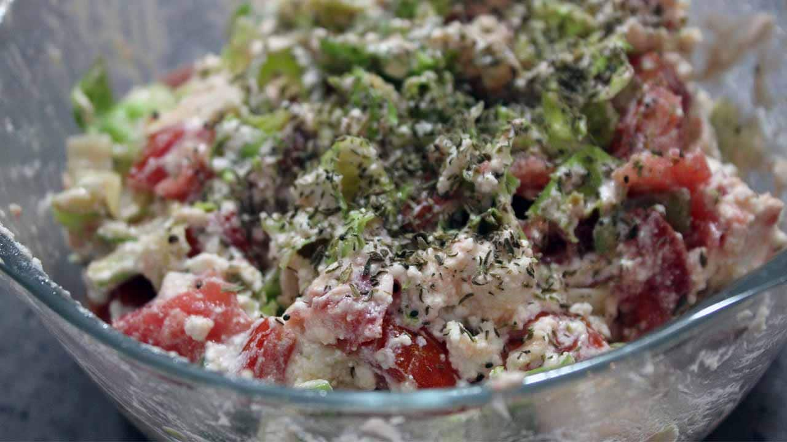
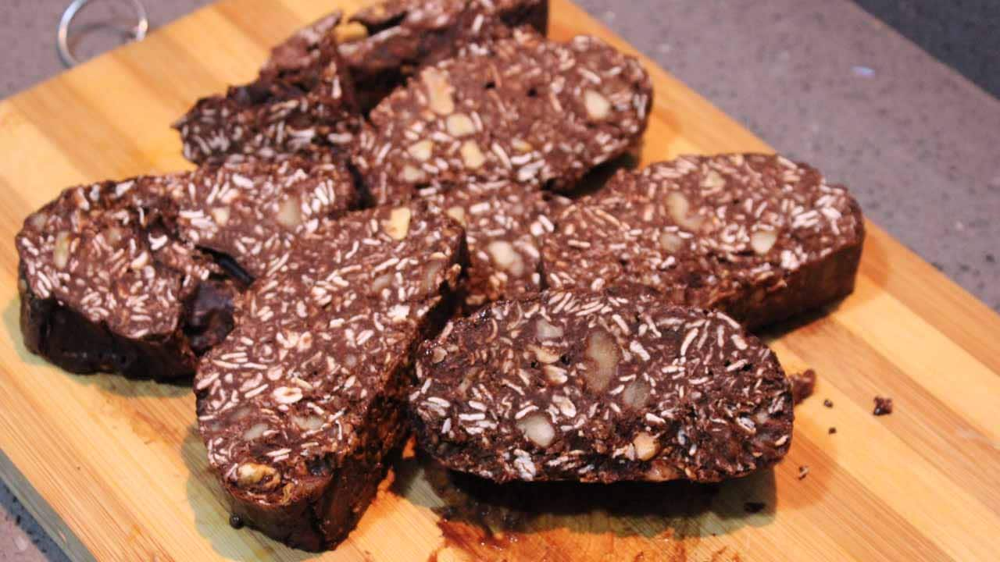

3 green peppers (finely chopped, after removing the stems and seeds)
3 eggs
Total Calories:177 kcal
Full Recipe:
Heat the oil in a pan over medium heat.
Add the peppers to the pan and cook for 5 minutes, stirring occasionally.
Add the chopped tomatoes to the pan and cook for another 5 minutes, stirring occasionally.
Season with salt and any desired spices.
Break the eggs into the pan and cook until set to your preference, about 2-3 minutes.
If desired, top with grated cheddar cheese and serve immediately.
Total Calories for selected eggs: 177 kcal
Curd Cheese Salad

Ingredients:
150 grams of curd cheese
2 green peppers
2 tomatoes
Lettuce
Half a lemon
2 tablespoons of olive oil
Full Recipe:
Cottage cheese is torn into pieces and placed in a bowl.
Wash the vegetables, preferably soak them in vinegar water, and after drying, chop them and add them to the salad bowl.
Add lemon and olive oil and mix the salad thoroughly. Add the desired spices, Enjoy your meal!
Total Calories for selected cheese: 0 kcal
Diet Mosaic Cake

Ingredients:
100 grams of oatmeal
1 banana
1 glass of hot water
1 tablespoon cocoa
1 tablespoon of honey (crushed dates, carob flour or molasses can be added as an alternative.)
1 scoop of chocolate protein powder (not necessary, if not added, the amount of honey can be increased.)
Desired amount of walnuts (I added 4 small walnuts.)
Full Recipe:
Place the oats in a large bowl, add hot water and let them cool at room temperature for 15-20 minutes.
After it has cooled, add cocoa and protein powder, if any, and mix well.
Mash the banana and add honey. Shred the banana thoroughly using a fork and mix.
Add walnuts.
Pour the mixture into wax paper, wrap it and leave it in the freezer for about 2 hours.
Our mosaic cake is ready to slice and eat.
Total Calories for selected oatmeal: 745 kcal
Chicken with Pesto Sauce
Ingredients:
700 grams of chicken breast
4 tablespoons of olive oil
2 medium sized tomatoes
2 green peppers
3 tablespoons pesto sauce
Black pepper, salt and desired spices
Full Recipe:
Chickens are cut into cubes.
Add 3 tablespoons of olive oil to the pot, and when it gets hot, add the chicken.
After sprinkling salt and pepper on it, mix it with a spoon, seal it and bring the chicken to a half-cooked state.
Transfer the chickens from the pot to another bowl, leave the chicken broth in the pot and add 1 tablespoon of olive oil. Then, the diced tomatoes and peppers are placed in the pot and cooked.
After the tomatoes release their juices, add the half-cooked chicken and pesto sauce to the pot and cook by stirring.